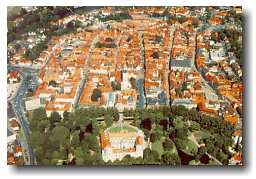
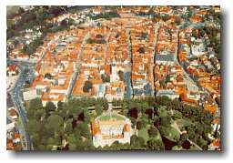
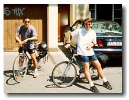
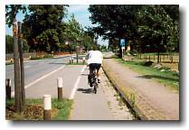
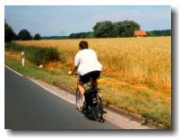
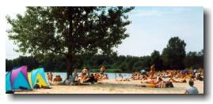
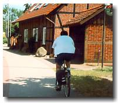
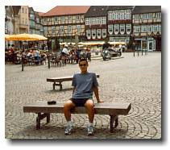

Biking to Celle, Germany

|
Biking to Celle, Germany  |
|
Trip #6: Saturday July 3 - Sunday July 4, 1999 A weekend bike trip had been decided on for a long time. The only question that remained was the destination. Although we knew the city of Celle didn't have much to offer tourists, it is 45km northeast of Hannover. Hey, perfect for a weekend bike trip. My fraternity hosted a party Friday night. All drinks were free and it was a good party, but unfortunately it claimed two of the riders. Once Saturday morning came, Friday night proved to be too much for Paul and Karyn. (They don't need to hang their heads low though; they revived their reputation by partying at the Sutzenfest (Hannover's yearly party/festival) that very night.) So, the two survivors of the night before left the day after to bike to Celle. That's Ryan and I. Seeing Germany on a bike is completely different from travelling on Train. I know that sounds obvious. But the difference goes far beyond pedaling and not pedaling. On a bike, you see things that you would never catch on a train. Things that would never be listed in travelling books (perhaps good, perhaps not). And things that would never be near tourist traps. We found a hidden Lake/Beach that was packed with locals. We went through farmland. We biked through "the middle of nowhere" where only cows and horses stopped us from thinking that life form was non-existent. OK, we could have done without the last one, as it reminded our senses of Chilliwack than anywhere else. But the point being, we saw them. We also saw small towns that were smaller than small. Ryan wanted to stop to buy a drink at the next town called Kirchhorst. We must have both blinked at the same time because we missed it. OK, I'll admit, we didn't see that town. But we saw other small towns. Towns where the police chief is also the plumber, teacher, and mayor. The other difference between trains and bikes is that trains can't get lost. Yes we got lost. Good thing that a little bit of back tracking here and there was all it took to correct our path. A notable mistake was when we hit the Lake/Beach. It was instructed in our cycling guide to veer off to the left once the other end of the lake was reached. I don't know what we were thinking. Or why we weren't thinking. We didn't even notice that we rode all the way around the lake. We though we found the other end and we exited via a trail. Things were starting to look really familiar. After about half a km, we realized that we exited the lake though the same trail that we entered. OK, we're not the best navigators, but it was worth a laugh. Record breaking alert: Once again, Ryan got shit on by a bird. That's right folks. Once thought impossible to break the record of getting shit on twice during a single trip to Europe (previously set by Ryan), it has been broken. His third time. Unbelievable. At least this time the bird was considerate. He didn't get hit on his shirt or sunglasse/eyebrow like the first couple of times, this time it was his pannier. I have an ongoing count of this on my "Europe Trip" website. Will be updated soon. A 45km bike ride should be a cakewalk. But it proved to be tiresome and even painful for my butt. After arriving in Celle, my butt felt like it would have done just as well sitting on plywood for 3 hours. 3 hours because that's how long it took us to get there. Definitely not record breaking time. But check this. We came back in 2 hours. Oh yeah. Once in Celle, there was really not much to do. The only thing we did that night was eat. And eating was an exercise in itself. I ordered this spicy spaghetti. The waiter gave me a smirk and asked me if I can really handle such European spicyness. Not to feel inferior, I gave him a little laugh and told him to lay it on me. By the time I got through my pasta, I was sweating more than I did the whole bike trip. Sometimes it's worth swallowing your pride. We tried to climb the church tower of Stadtkirche the next day. But it was not open to tourists on Sunday and Monday. Damn. We weren't interested in anything else Celle had to offer, so we began our ride back to Hannover. We got back to Hannover quite early Sunday. 2pm in fact. We spent the good part of the afternoon at Hannover's Herrenhausen Garten. |
 johnnyo@canada.com
johnnyo@canada.com